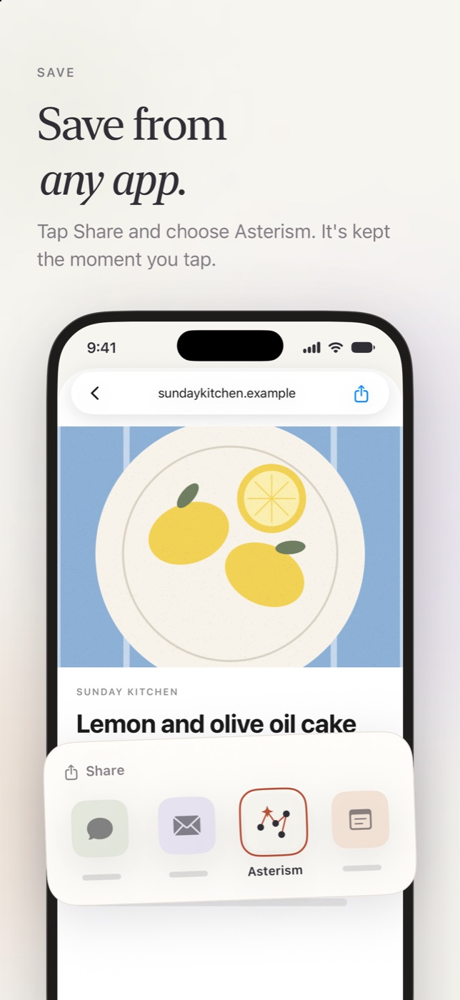
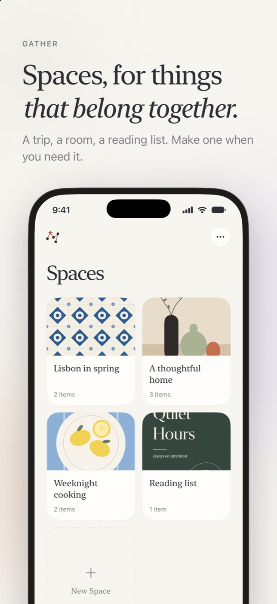
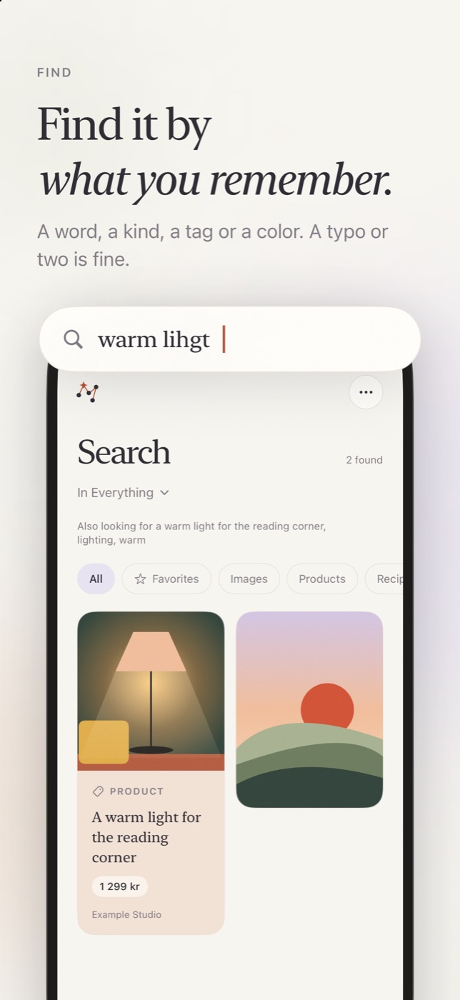

Keep what makes you look twice.
Asterism [ˈæs.tə.rɪ.zəm] · a recognizable pattern of stars.
Asterism brings your links, images, quotes and ideas into one visual library, ready for the moment you want them again. For iPhone, iPad and Mac.



Save as you go
Save links, selected text and images from any app with the share sheet, or add a note, a link or a photo directly.
Find what you remember
Search with the words you remember. Browse by tag or color and explore related items.
Gather into Spaces
Collect things for a project, a trip or an interest, by hand or with rules that fill a Space on its own.
Read and keep the good parts
A focused reader for saved articles, quotes that keep their source, and your own notes.
Private by design
Your library stays on your devices and syncs through your own iCloud. No account, no tracking.
Help with organizing
Titles, tags and descriptions suggested on your device with Apple Intelligence, or by an AI provider you choose to connect.